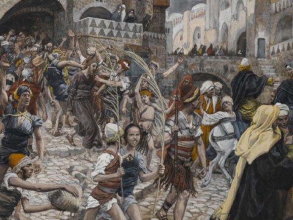
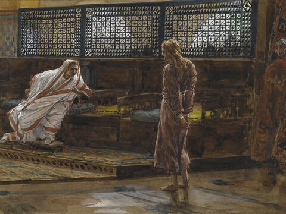
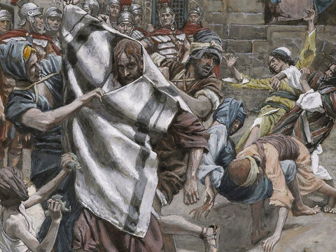
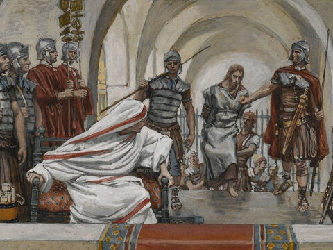

Lord Jesus Delivered To Pilate
And the whole multitude of them arose, and led him unto Pilate.
And they began to accuse him, saying, We found this fellow perverting the nation, and forbidding to give tribute to Caesar, saying that he himself is Christ a King.
And Pilate asked him, saying, Art thou the King of the Jews? And he answered him and said, Thou sayest it.
Then said Pilate to the chief priests and to the people, I find no fault in this man.
And they were the more fierce, saying, He stirreth up the people, teaching throughout all Jewry, beginning from Galilee to this place.
When Pilate heard of Galilee, he asked whether the man were a Galilaean.
And as soon as he knew that he belonged unto Herod's jurisdiction, he sent him to Herod, who himself also was at Jerusalem at that time.
And when Herod saw Jesus, he was exceeding glad: for he was desirous to see him of a long season, because he had heard many things of him; and he hoped to have seen some miracle done by him.
Then he questioned with him in many words; but he answered him nothing.
And the chief priests and scribes stood and vehemently accused him.
And Herod with his men of war set him at nought, and mocked him, and arrayed him in a gorgeous robe, and sent him again to Pilate.
And the same day Pilate and Herod were made friends together: for before they were at enmity between themselves.
Luke 23:1-12
- 
- 
- 
- 